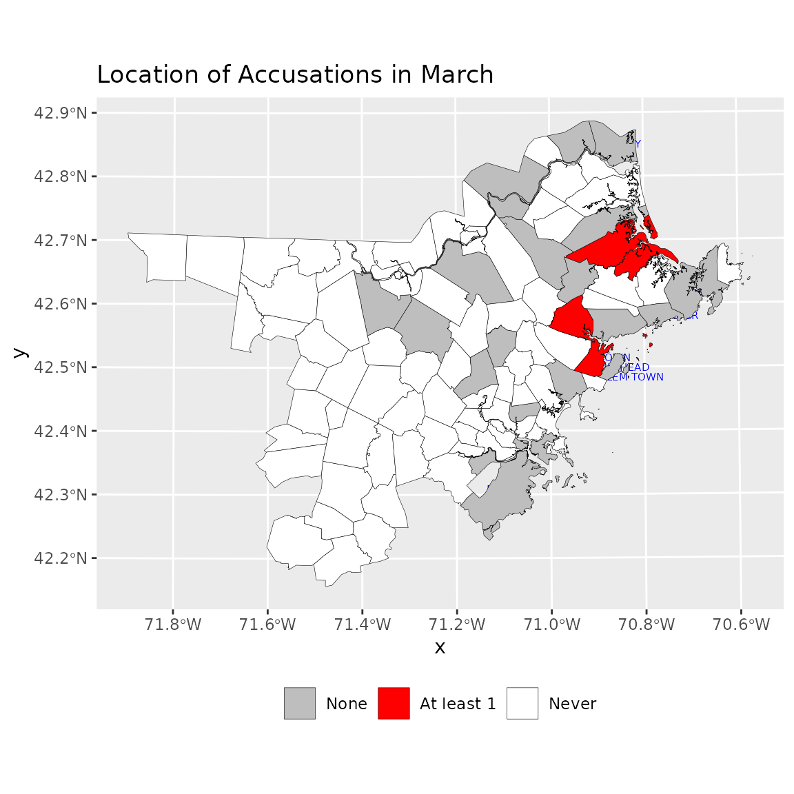
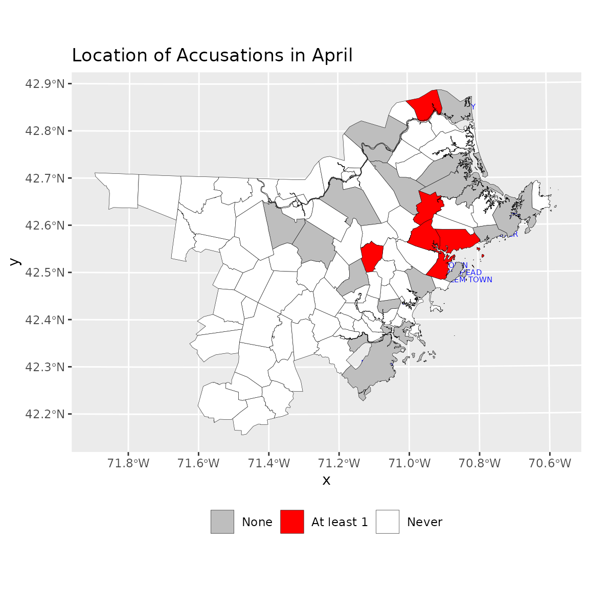
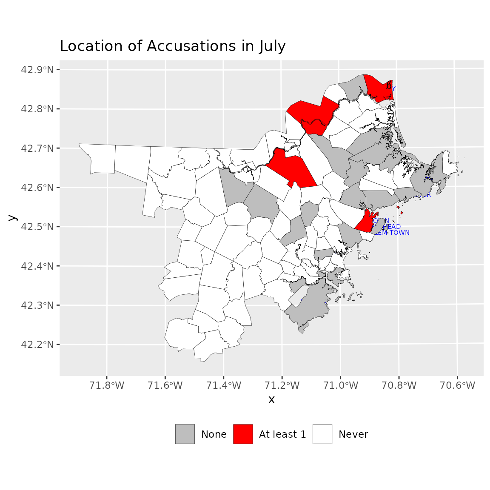
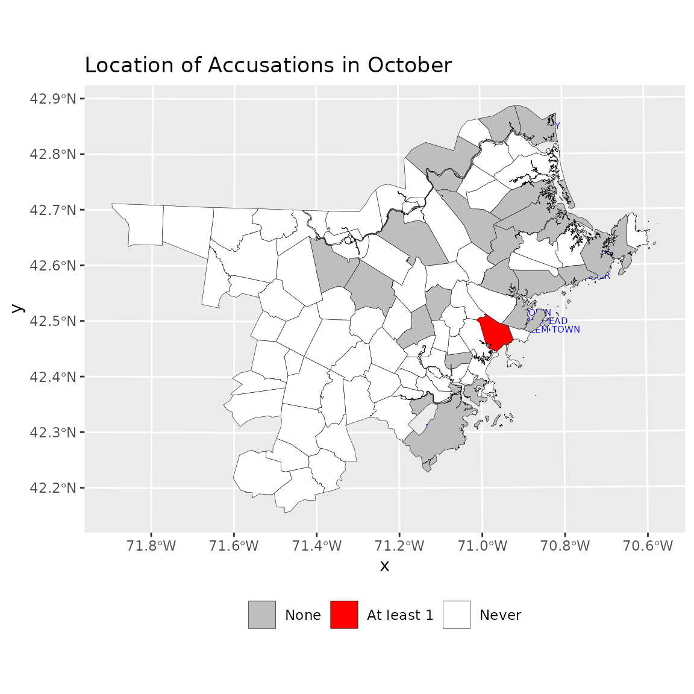
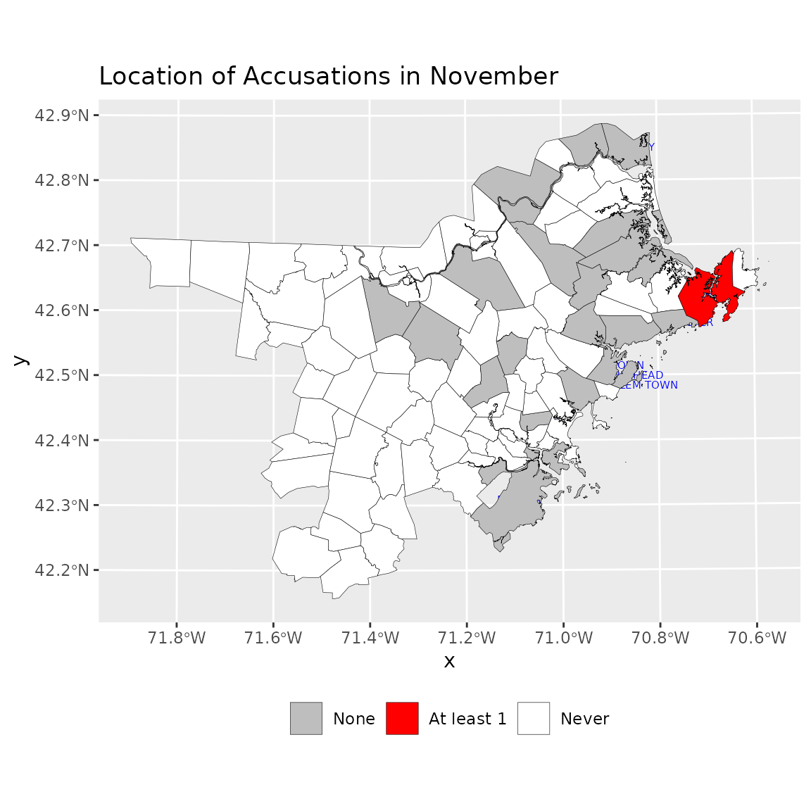

Maps
We can use maps to represent the geographic distribution over time spatially. The salem_region data set is an sf (simple features) data set that provides geographic data for the towns in the three Massachuessets counties represented in our data: Essex, Middlesex and Sussex.
To use this data you will need to install the sf package. The code at the start of the second code chunk tests for whether you have done this.
Not all of the towns in these three counties had accusations: the majority did not. The data also include the total accused for each town and the monthly accused for the towns that ever had an accusation. However, these variables should never be used outside of maps because the results will be incorrect. This is because many towns have multiple records. This is especially true if they include islands, which is common in this region of the state. These are based on modern municipal boundaries which are close to but not the same as the historical ones. There are many geographic analyses that can be done. Below a comparison of the distribution of whether towns had at least on accusation in each of four months is given.
First, create variables indicating whether towns did or did not have an accusation in a month and remove the TOWN_LABELs for all the towns that never had an accusation.
Here requireNamespace is used to check whether the
sf package is installed. That is because sf is
only suggested and not required. It can be complex to install on some
computers.
if (!requireNamespace("sf", quietly = TRUE)) {
knitr::knit_exit()
}
# Set up some common elements.
p1 <- ggplot(salem_region) +
geom_sf_text(aes(label = TOWN_LABEL), color = "blue", size = 2,
nudge_x = 5,
nudge_y = 5, na.rm = TRUE)
p2 <- scale_fill_manual(values = c( "grey", "red"), na.value = "white")
newdata <- salem_region |> mutate(February.Any = February > 0,
March.Any = March > 0,
April.Any = April > 0, May.Any = May > 0,
June.Any = June > 0, July.Any = July > 0,
August.Any = August > 0,
September.Any = September >0,
October.Any = October > 0,
November.Any = November > 0,
TOWN_LABEL = ifelse(n_accused == 0,
NA, TOWN_LABEL)
)
p1 + geom_sf(data = newdata,
aes(geometry = geometry, fill = February.Any
), color = "black",
size = .1)+
labs(title = "Location of Accusations in February") +
scale_fill_manual(values = c( "grey", "red"), na.value = "white",
labels = c("None", "At least 1", "Never")) +
theme(legend.title = element_blank(), legend.position = "bottom")
p1 + geom_sf(data = newdata,
aes(geometry = geometry, fill = March.Any
), color = "black",
size = .1)+
labs(title = "Location of Accusations in March") +
scale_fill_manual(values = c( "grey", "red"), na.value = "white",
labels = c("None", "At least 1", "Never")) +
theme(legend.title = element_blank(), legend.position = "bottom")
p1 + geom_sf(data = newdata,
aes(geometry = geometry, fill = April.Any
), color = "black",
size = .1)+
labs(title = "Location of Accusations in April") +
scale_fill_manual(values = c( "grey", "red"), na.value = "white",
labels = c("None", "At least 1", "Never")) +
theme(legend.title = element_blank(), legend.position = "bottom")
p1 + geom_sf(data = newdata,
aes(geometry = geometry, fill = July.Any),
color = "black", size = .1) +
labs(title = "Location of Accusations in July") +
scale_fill_manual(values = c( "grey", "red"), na.value = "white",
labels = c("None", "At least 1", "Never")) +
theme(legend.title = element_blank(), legend.position = "bottom")
p1 + geom_sf(data = newdata,
aes(fill = August.Any, geometry = geometry),
color = "black",
size = .1) +
labs(title = "Location of Accusations in August",
labels = c("None", "At least 1", "Never")) +
scale_fill_manual(values = c( "grey", "red"), na.value = "white",
labels = c("None", "At least 1", "Never")) +
theme(legend.title = element_blank(), legend.position = "bottom")
p1 + geom_sf(data = newdata,
aes(fill = October.Any, geometry = geometry),
color = "black",
size = .1) +
labs(title = "Location of Accusations in October",
) +
scale_fill_manual(values = c( "grey", "red"), na.value = "white",
labels = c("None", "At least 1", "Never")) +
theme(legend.title = element_blank(), legend.position = "bottom") 
p1 + geom_sf(data = newdata,
aes(fill = November.Any, geometry = geometry),
color = "black",
size = .1) +
labs(title = "Location of Accusations in November") +
scale_fill_manual(values = c( "grey", "red"), na.value = "white",
labels = c("None", "At least 1", "Never")) +
theme(legend.title = element_blank(), legend.position = "bottom")